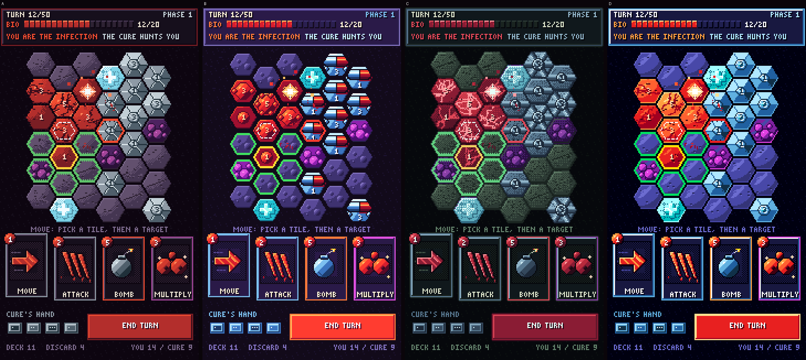
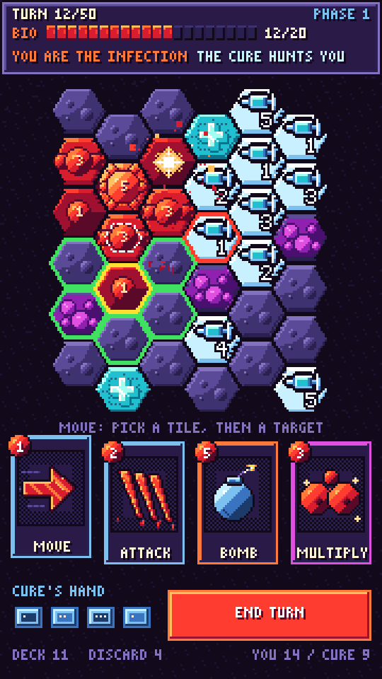

Mobile-first, turn-based hex strategy. You are a spreading virus; the opponent is an AI "Cure" that hunts you. The design goal is to be as satisfying as popping bubble wrap.
Biomass economy: start 10, cap 20, regenerates by tile count.
Terrain: Viral Nest gives +1 defense, Sterile Zone gives -1.
Encirclement erodes enemy tiles that are mostly surrounded by you.
Capture swing: after a kill, enemy tiles mostly surrounded by the killer flip to them. Applies to both sides.
Auto-spread every 2nd turn.
Scoring end at turn 50: most tiles wins.
The AI uses the same cards and the same economy. Its hand is shown face-up, and each play is telegraphed before it resolves.
## tech
Godot 4.2.2, GDScript only.
All tunable values live in one autoload, game_config.gd.
191 GUT tests, run headless.
HTML5/WASM web build for browser playtests. build/serve.py sends the COOP/COEP headers needed for local testing.
A Firebase folder is scaffolded for a future backend. Not in use yet.
68 commits, first 2026-04-05, latest 2026-10-14.
## art
Direction B, "Neo Geo chunky": pixel sprites for tiles, claim splats, 9-slice HUD panels and a bitmap pixel font. The Cure is drawn as a syringe. Four directions (A to D) were mocked up side by side; B was picked.

The four art directions that were compared.

The Cure, B7 variant.
An earlier 16-bit "Charnel Membrane" pass (2026-07-08) was replaced by Direction B.
## audio
Kill sound is procedural. It is a cork click and knock, then a rising 180 to 380 Hz "bloop". Several versions were rejected in play before it was signed off.
On 2026-10-14 the rest of the sound moved to a sampled WAV set, with pitch-stepped pops for capture chains, background music, and a music mute toggle in the HUD.
## timeline
2026-04: first cards, terrain and encirclement.
2026-05: kamikaze Jump, and Attack kills advance into the cleared hex.
2026-07-07: 8-card MVP set complete.
2026-07-16: web build, and a fix for taps firing twice on touch.
2026-07-17: AI plays the same cards as the player.
Prototype built; balance passes are done in the sim. Current phase: Art and Polish. Next: multiple boards, then online multiplayer. Final playtest sign-off is still pending.